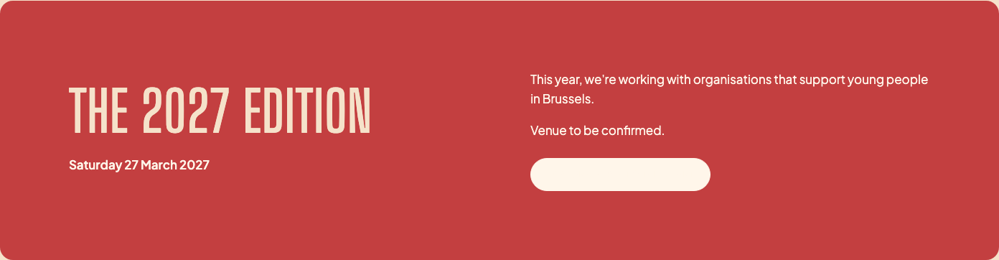

Keep the words.
Move the arrow.
The label should stay readable throughout a rollover. Three options below show different levels of movement, using the existing pill shape, colours and fonts.
My pick: R01 for the site. The arrow leads while the label and background stay steady. It adds feedback without competing with the photographs.
R02 is the bolder alternative. A controlled ink sweep, with the label changing colour exactly where the new background reaches it.

The label disappeared.
The CSS changed the background on the link, but changed text colour only on a child span. Flux rendered this label as direct text, so it stayed cream on cream.
The contrast bug is fixed independently. The link now owns its text colour. Choosing an animation below is a separate design decision.
Sources: original CSS, pill rules; pill component; measured original hover. The screenshot is the reported edition action.